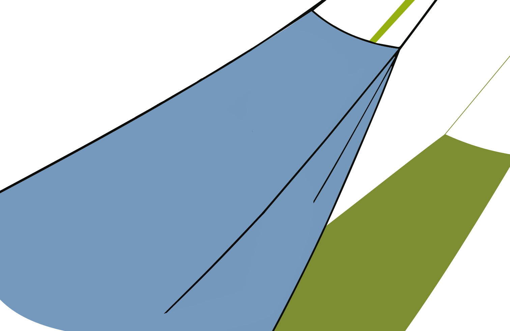
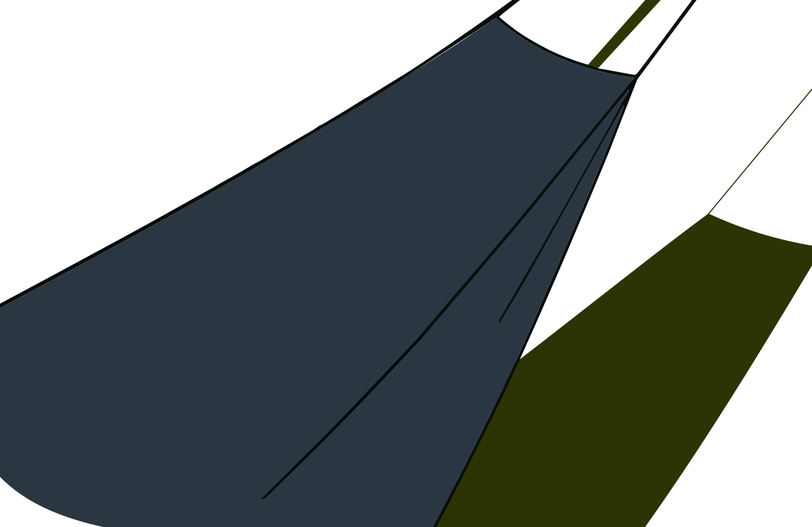
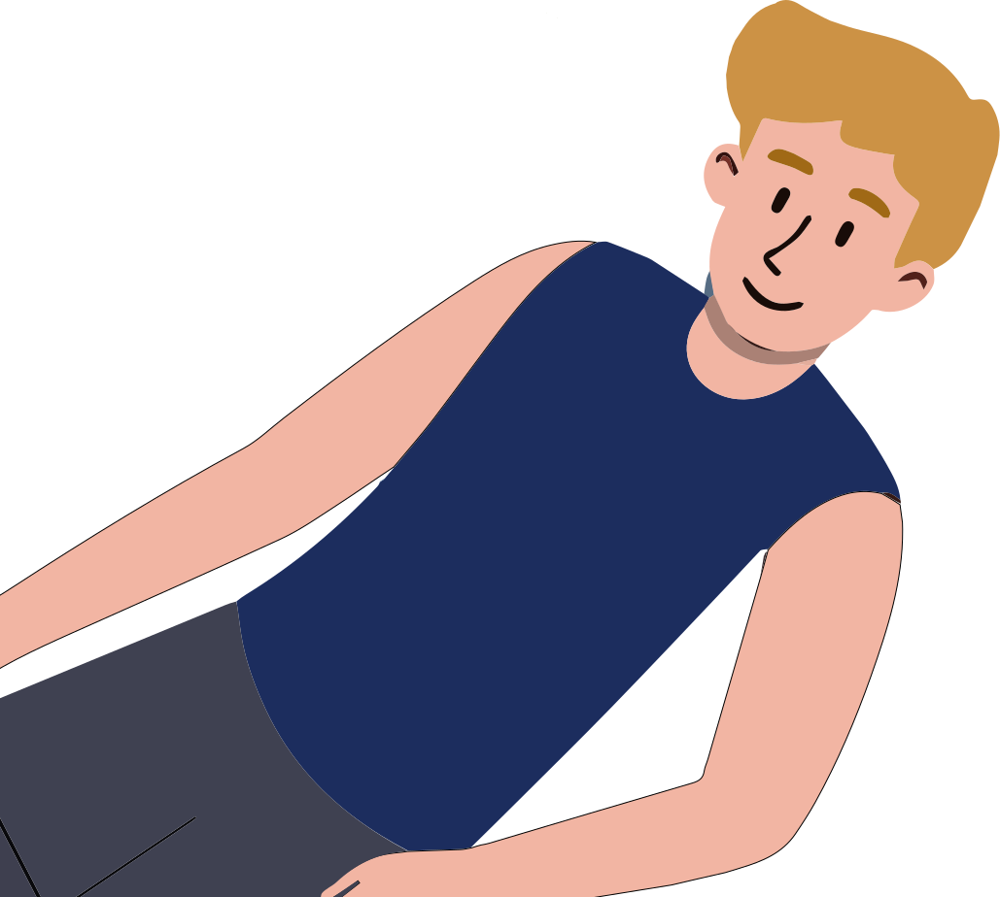
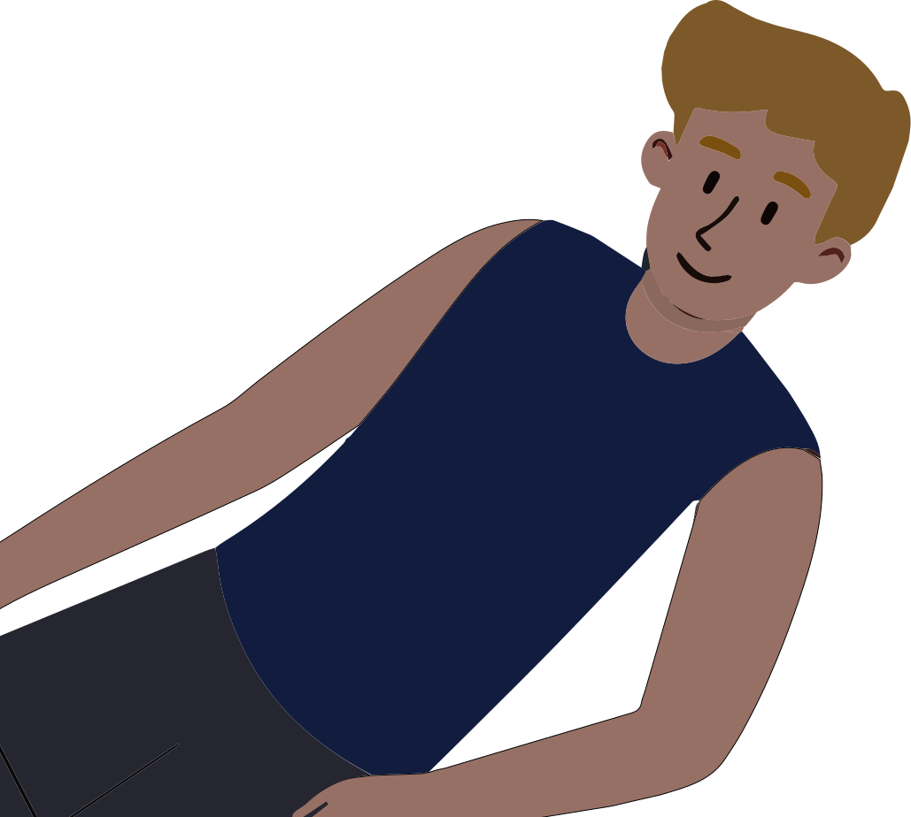
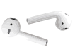
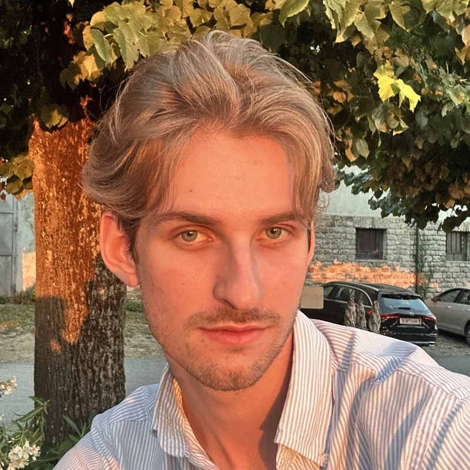

a photo of me goes atthanks for visiting my website and following the helper bee to get to me <3
my name is rolands. i'm a senior studying data science at minerva university, though i'm also interested in environmental sustainability and have a soft spot for automation. what connects them, at least the way i see it, is humans, because one keeps the world livable and the other makes daily life easier.
i chose the theme of my personal website to be nature because i enjoy being surrounded by it, whether that's hiking or spending time in whatever green space there is nearby (also, perhaps this website is a reminder to go outside more). my friends know that i'm a big fan of the city too, for the convenience and social opportunities, but nature is where i find myself most at peace and i wanted this space to feel similar.
if you haven't already, click around the website to see where you get. take a look at the tent to see my computational and environmental projects or the compass that shows my expertise. if anything resonates with you, the contact bars tell you how to reach me.
oh, and don't forget to check out what music i was listening to while building this (click the airpods in the back). and drop your favorite hiking spot on the map, so i can one day experience it too!